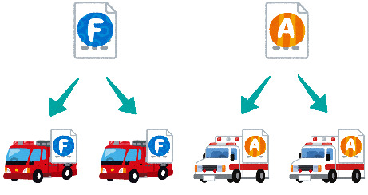
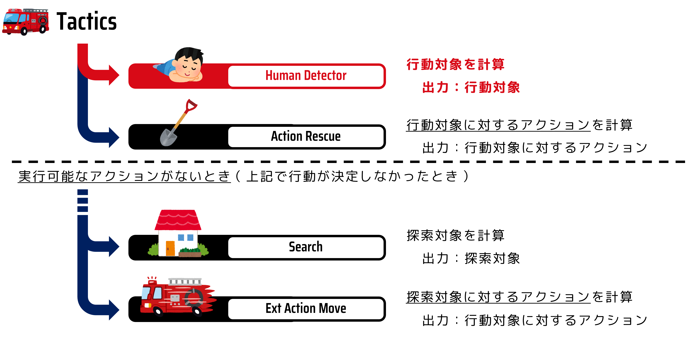
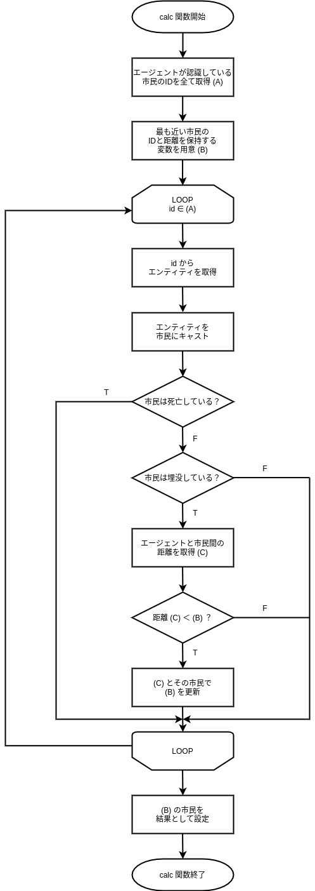

Agent Control#
This section explains how to create a program to control agents.
About Agent Control#
There are three types of disaster rescue agents in RRS, and each type requires a different program. However, it is difficult to write all the programs from the beginning. Here, let’s first write part of the program to control the fire brigade agent.
Note
The program that controls the agents is the same for each type of agent. The program is distributed to each agent and is responsible for controlling only that agent. If you write a program to control the fire brigade agent, it will run on all fire brigade agents.

Agent Operation Flow#
The program that determines the agent’s actions is called Tactics.
The fire brigade’s thought routine is roughly as shown in the diagram below. The fire brigade’s actions are to first search for the target citizen (Human Detector) and rescue the found citizen (Action Rescue). If no target citizen is found, the search location is changed to search for citizens, the next search location is determined (Search), and the agent moves (Action Ext move). Note that the agent cannot perform both movement and rescue activities within one step. In other words, the agent checks the updated surrounding information at each step and determines the target and action content. Each of these functions is expressed as a program called a module.
This time, we will develop the Human Detector module that determines the rescue (digging) target.

Preparing to Implement the Human Detector Module#
First, create a file to describe the Human Detector module.
cd WORKING_DIR/<your_team_name>
touch src/<your_team_name>/module/complex/fire_brigade_human_detector.py
Next, implement the template for the Human Detector module. Please write the following code in fire_brigade_human_detector.py.
from typing import Optional
from rcrs_core.worldmodel.entityID import EntityID
from adf_core_python.core.agent.develop.develop_data import DevelopData
from adf_core_python.core.agent.info.agent_info import AgentInfo
from adf_core_python.core.agent.info.scenario_info import ScenarioInfo
from adf_core_python.core.agent.info.world_info import WorldInfo
from adf_core_python.core.agent.module.module_manager import ModuleManager
from adf_core_python.core.component.module.complex.human_detector import HumanDetector
from adf_core_python.core.logger.logger import get_agent_logger
class FireBrigadeHumanDetector(HumanDetector):
def __init__(
self,
agent_info: AgentInfo,
world_info: WorldInfo,
scenario_info: ScenarioInfo,
module_manager: ModuleManager,
develop_data: DevelopData,
) -> None:
super().__init__(
agent_info, world_info, scenario_info, module_manager, develop_data
)
# 計算結果を格納する変数
self._result: Optional[EntityID] = None
# ロガーの取得
self._logger = get_agent_logger(
f"{self.__class__.__module__}.{self.__class__.__qualname__}",
self._agent_info,
)
def calculate(self) -> HumanDetector:
"""
行動対象を決定する
Returns
-------
HumanDetector: 自身のインスタンス
"""
self._logger.info("Calculate FireBrigadeHumanDetector")
return self
def get_target_entity_id(self) -> Optional[EntityID]:
"""
行動対象のEntityIDを取得する
Returns
-------
Optional[EntityID]: 行動対象のEntityID
"""
return self._result
Registering the Module#
Next, register the created module.
Open the WORKING_DIR/<your_team_name>/config/module.yaml file and
DefaultTacticsFireBrigade:
HumanDetector: src.<your_team_name>.module.complex.sample_human_detector.SampleHumanDetector
change the following part as shown below.
DefaultTacticsFireBrigade:
HumanDetector: src.<your_team_name>.module.complex.fire_brigade_human_detector.FireBrigadeHumanDetector
Open two terminals.
Open one terminal and start the simulation server with the following command:
# Terminal A
cd WORKING_DIR/rcrs-server/scripts
./start-comprun.sh -m ../maps/tutorial_fire_brigade_only/map -c ../maps/tutorial_fire_brigade_only/config
Then, open another terminal and start the agent:
# Terminal B
cd WORKING_DIR/<your_team_name>
python main.py
If Calculate FireBrigadeHumanDetector is displayed in the standard output, it is successful.
Designing the Human Detector Module#
Write the content of the rescue target selection program and modify it so that the fire brigade agent can perform rescue activities.
The simplest way for a fire brigade agent to select a rescue target is to choose the closest buried citizen. This time, let’s write a module to determine the action target of the fire brigade agent using this method.
The method of selecting the closest buried citizen as the rescue target is shown in the flowchart below.

By replacing each process in this flowchart with the classes and methods introduced in the next subsection, and writing them in fire_brigade_human_detector.py, you will complete the rescue target selection program.
Classes and Methods Used in the Implementation of the Human Detector Module#
Entity#
The Entity class is the base class for entities. This class holds the basic information of an entity.
Entities in RRS are represented by classes that inherit from Entity as shown in the diagram below. The classes enclosed in red boxes directly represent the components of RRS.
For example, among the instances of the Road class, there are those that represent ordinary roads that do not inherit from the Hydrant class.

EntityID#
The EntityID class represents an ID (identifier) that uniquely identifies all agents/objects. In RRS, agents and objects are collectively referred to as entities.
Civilian#
The Civilian class represents a citizen. From this class, you can obtain the position of the agent and the progress of injuries.
Determine if
entityis a civilian
is_civilian: bool = isinstance(entity, Civilian)
Get the Entity ID
entity_id: EntityID = entity.get_id()
Determine if the civilian is alive
hp: Optional[int] = entity.get_hp()
if hp is None or hp <= 0:
return False
Determine if the civilian is buried
buriedness: Optional[int] = entity.get_buriedness()
if buriedness is None or buriedness <= 0:
return False
WorldInfo#
The WorldInfo class is a class that has methods for the information that the agent knows and the operations related to it. Through an instance of this class, the agent checks the status of other agents and objects.
In the module, an instance of the WorldInfo class is held as self._world_info.
Get the entity from the Entity ID
entity: Entity = self._world_info.get_entity(entity_id)
Get all entities of the specified class
entities: list[Entity] = self._world_info.get_entities_by_type([Building, Road])
Get the distance from the agent’s position to the specified entity
distance: float = self._world_info.get_distance(me, civilian.get_id())
AgentInfo#
The AgentInfo class is a class that has methods for the agent’s own information and operations related to it. Through an instance of this class, the agent obtains its own status.
In the module, an instance of the AgentInfo class is held as self._agent_info.
Get your own entity ID
my_entity_id: EntityID = self._agent_info.get_entity_id()
Implementation of the Human Detector Module#
Implement the Human Detector module. Please write the following code in fire_brigade_human_detector.py.
from typing import Optional
from adf_core_python.core.agent.develop.develop_data import DevelopData
from adf_core_python.core.agent.info.agent_info import AgentInfo
from adf_core_python.core.agent.info.scenario_info import ScenarioInfo
from adf_core_python.core.agent.info.world_info import WorldInfo
from adf_core_python.core.agent.module.module_manager import ModuleManager
from adf_core_python.core.component.module.complex.human_detector import HumanDetector
from adf_core_python.core.logger.logger import get_agent_logger
from rcrs_core.entities.civilian import Civilian
from rcrs_core.entities.entity import Entity
from rcrs_core.worldmodel.entityID import EntityID
class FireBrigadeHumanDetector(HumanDetector):
def __init__(
self,
agent_info: AgentInfo,
world_info: WorldInfo,
scenario_info: ScenarioInfo,
module_manager: ModuleManager,
develop_data: DevelopData,
) -> None:
super().__init__(
agent_info, world_info, scenario_info, module_manager, develop_data
)
# 計算結果を格納する変数
self._result: Optional[EntityID] = None
# ロガーの取得
self._logger = get_agent_logger(
f"{self.__class__.__module__}.{self.__class__.__qualname__}",
self._agent_info,
)
def calculate(self) -> HumanDetector:
"""
行動対象を決定する
Returns
-------
HumanDetector: 自身のインスタンス
"""
# 自分自身のEntityIDを取得
me: EntityID = self._agent_info.get_entity_id()
# すべてのCivilianを取得
civilians: list[Entity] = self._world_info.get_entities_of_types(
[
Civilian,
]
)
# 最も近いCivilianを探す
nearest_civilian: Optional[EntityID] = None
nearest_distance: Optional[float] = None
for civilian in civilians:
# civilianがCivilianクラスのインスタンスでない場合はスキップ
if not isinstance(civilian, Civilian):
continue
# civilianのHPが0以下の場合はすでに死んでしまっているのでスキップ
if civilian.get_hp() <= 0:
continue
# civilianの埋没度が0以下の場合は掘り起こす必要がないのでスキップ
if civilian.get_buriedness() <= 0:
continue
# 自分自身との距離を計算
distance: float = self._world_info.get_distance(me, civilian.get_id())
# 最も近いCivilianを更新
if nearest_distance is None or distance < nearest_distance:
nearest_civilian = civilian.get_id()
nearest_distance = distance
# 計算結果を格納
self._result = nearest_civilian
# ロガーに出力
self._logger.info(f"Target: {self._result}")
return self
def get_target_entity_id(self) -> Optional[EntityID]:
"""
行動対象のEntityIDを取得する
Returns
-------
Optional[EntityID]: 行動対象のEntityID
"""
return self._result
Open two terminals.
Open one terminal and start the simulation server with the following command:
# Terminal A
cd WORKING_DIR/rcrs-server/scripts
./start-comprun.sh -m ../maps/tutorial_fire_brigade_only/map -c ../maps/tutorial_fire_brigade_only/config
Then, open another terminal and start the agent:
# Terminal B
cd WORKING_DIR/<your_team_name>
python main.py
It is successful if the fire brigade agent can rescue the buried citizens.